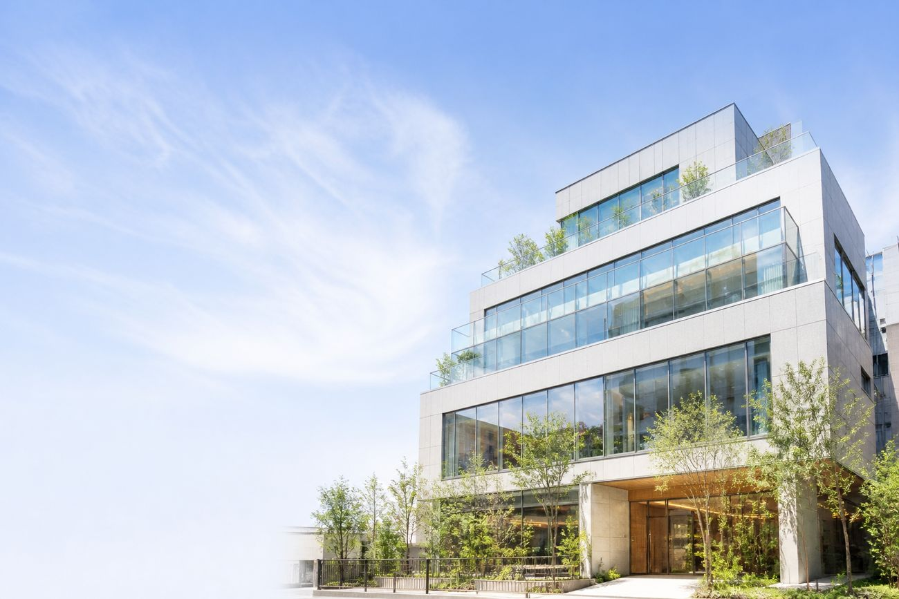

REAL ESTATE REGENERATION
再生の
全工程を、
見せる。
ビルの買取・再生と、売買仲介を行っています。
SCROLL TO FOLLOW THE PROCESS
 01 / BEFORE
01 / BEFORE02 / PLANNING
03 / RENOVATION

04 / AFTER01物件情報
02企画・設計
03再生工事
04再生後
プロセスを、
信頼情報にする。
写真と工程を最初に置き、専門性を感じさせる案です。下層も黒を基調にし、読む位置にだけ短い動きを加えます。